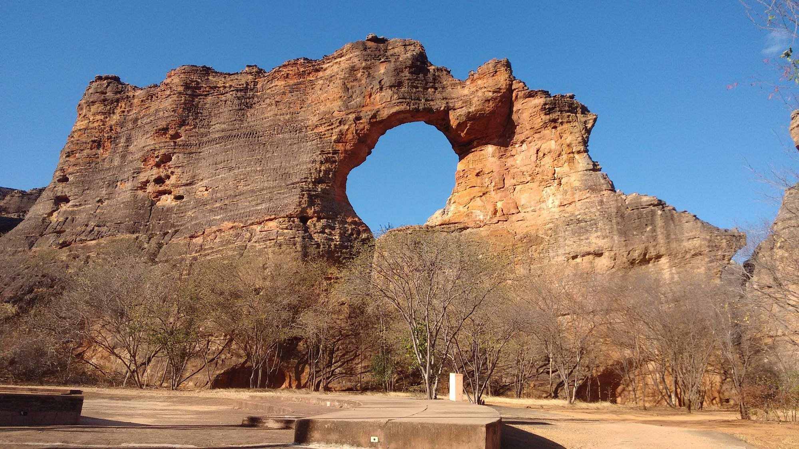
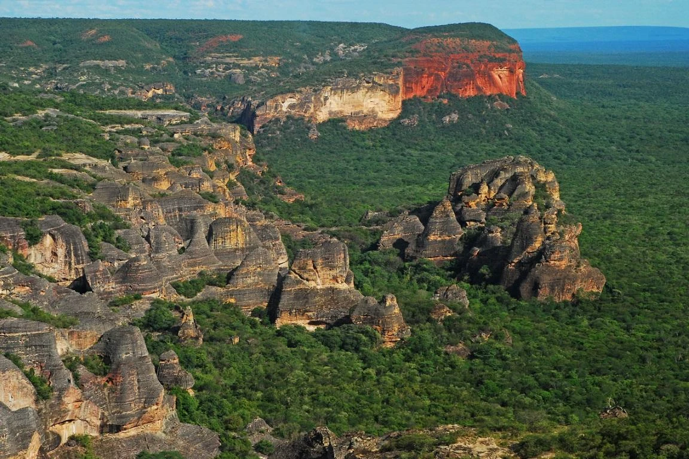
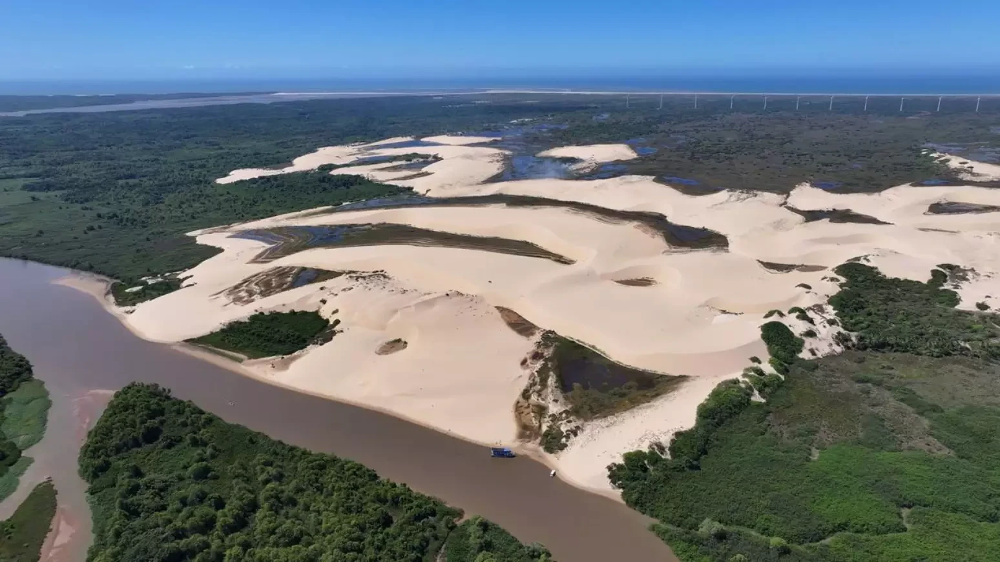
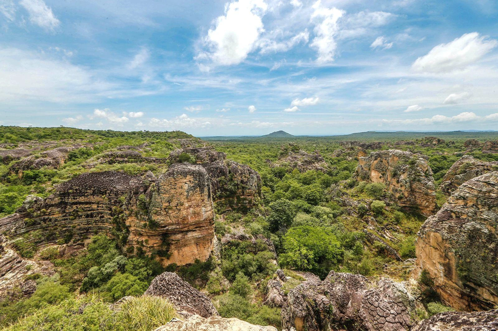
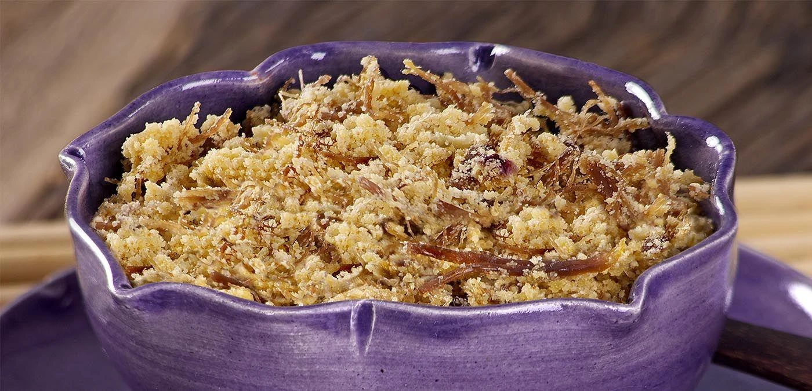
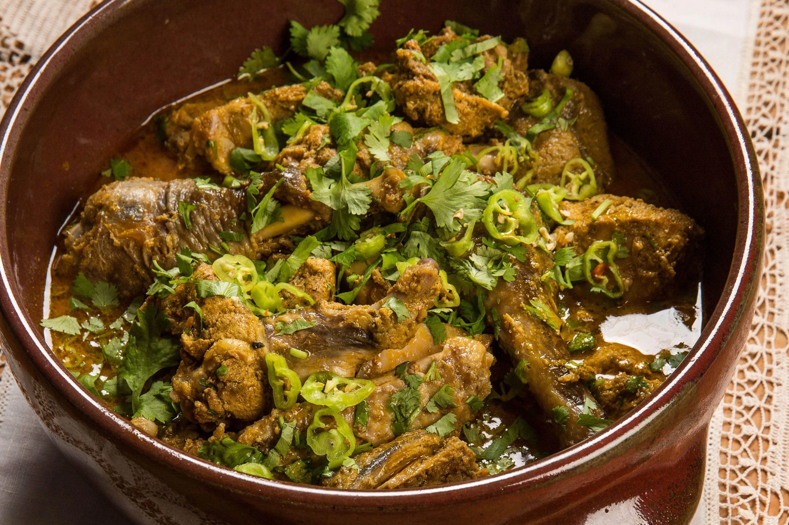

Capital
Teresina
Conheça destinos, culturas, sabores e paisagens de todas as regiões
brasileiras.
Destinos, culturas e paisagens
incríveis te esperam.
O Piauí é um estado localizado na Região Nordeste do Brasil, conhecido por suas belezas naturais, sítios arqueológicos e rica herança cultural. Possui paisagens que vão desde o litoral até áreas de cerrado e caatinga, destacando-se como um importante destino para o ecoturismo e para o turismo histórico.

Teresina
Aproximadamente 251.755 km²
Cerca de 3,3 milhões de habitantes
Nordeste

Patrimônio Mundial da UNESCO, o parque abriga uma das maiores concentrações de sítios arqueológicos das Américas, com pinturas rupestres que ajudam a contar a história dos primeiros habitantes do continente.

Único delta das Américas que deságua em mar aberto das Américas, é formado por ilhas, dunas, manguezais e rios. O local oferece passeios de barco e belas paisagens naturais para os visitantes.

Conhecido por suas impressionantes formações rochosas esculpidas pela ação do tempo, o parque reúne trilhas, inscrições rupestres e cenários ideais para o ecoturismo.
.webp)
Prato tradicional da culinária nordestina muito apreciado no Piauí, o baião de dois é preparado com arroz e feijão cozidos juntos, geralmente acompanhados de carne de sol, queijo coalho e temperos regionais.

Feita com carne de sol desfiada e farinha de mandioca, é uma iguaria muito consumida em diversas regiões do estado.

Prato preparado com galinha-d'angola, geralmente servido com arroz e temperos regionais, representando a tradição gastronômica local.
Predominantemente quente durante todo o ano, com período chuvoso entre janeiro e maio.
Predominantemente quente durante todo o ano, com período chuvoso entre janeiro e maio.
A região da Serra da Capivara é ideal para quem gosta de história e arqueologia, enquanto o litoral e o Delta do Parnaíba são excelentes para ecoturismo e passeios naturais.
A região da Serra da Capivara é ideal para quem gosta de história e arqueologia, enquanto o litoral e o Delta do Parnaíba são excelentes para ecoturismo e passeios naturais.
A culinária piauiense destaca-se pelo uso de carne de sol, arroz, mandioca e temperos regionais, proporcionando sabores marcantes e autênticos do Nordeste brasileiro.
A culinária piauiense destaca-se pelo uso de carne de sol, arroz, mandioca e temperos regionais, proporcionando sabores marcantes e autênticos do Nordeste brasileiro.